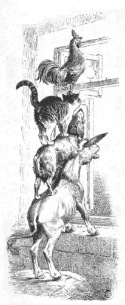

ブレーメンの音楽師
グリム Grimm
矢崎源九郎訳
ある人が一ぴきのロバをもっていました。そのロバは、長い年月のあいだ、しんぼう強く、背中にふくろをしょっては、水車小屋まではこんでいました。でも、そのうちに、力もなくなってきて、だんだんこのしごとができないようになりました。
そこで、主人は、ここらで、ロバにかいばをやるのはやめるとしよう、と、考えました。
ところが、ロバのほうでも、じぶんにぐあいのよくないようすを見てとって、さっさと主人のうちをにげだしました。そして、ブレーメンという町にむかって歩いていきました。ロバの考えでは、その町にいけば、町の音楽隊にやとってもらえるかもしれないと、思ったのです。
しばらくいきますと、一ぴきの猟犬が道にねころがって、口をあけて、ハア、ハア、やっていました。そのようすは、さんざん走りまわったために、すっかりくたびれてしまったとでもいうようでした。
「おい、あばれんぼう、きみはどうしてそんなに、ハア、ハア、やってるんだ。」
と、ロバはたずねました。
「いや、じつはね。」
と、犬がいいました。
「おれもすっかり年をとっちまって、からだが日ましによわってきたのさ。で、狩りにでかけても、むかしのようにかけまわれやしない。だもんだから、主人がおれを殺そうとするんだ。それで、あわててにげだしてきたってわけなんだが、さてこれからさき、どうやってめしにありついたもんだろうなあ。」
「そんなら、どうだい。」
と、ロバはいいました。
「おれは、これからブレーメンへいって、あの町の音楽師になろうと思っているところだが、きみもいっしょにいって、音楽隊にやとってもらったら。おれはギターをひくから、きみはたいこをたたきなよ。」
それをきいて、犬はすっかりよろこびました。そこで、二ひきはいっしょにでかけました。
すこし歩いていきますと、一ぴきのネコが道ばたにすわりこんで、三日も雨にふりこめられたような顔をしていました。
「おや、ひげなでばあさん、なにをそんなにこまってるんだね。」
と、ロバはたずねました。
「命にかかわることだもの、のんきにかまえちゃいられないさ。」
と、ネコはこたえました。
「わたしゃ、このとおり年をとっちまったし、歯もきかなくなった。それに、ネズミなんかを追いまわすよりも、ストーブのうしろにでもすわりこんで、のどをゴロゴロやってるほうがすきなのさ。ところがそうすると、うちのおかみさんは、わたしを川のなかへぶちこもうっていう気をおこしたんだよ。それで、わたしゃ、いそいでとびだしてきたんだけど、といって、うまい知恵もなし、これからどこへいったらいいだろうねえ。」
「おれたちといっしょに、ブレーメンへいこうじゃないか。おまえさんは夜の音楽がおとくいだから、町の音楽隊にやとってもらえるよ。」
ネコは、それはいい考えだと思いましたので、みんなといっしょにでかけました。
にげだしてきたこの三びきのものたちは、やがて、とある屋敷のそばをとおりかかりました。すると、門の上に一羽のオンドリがとまっていて、ありったけの声でさけびたてていました。
「きみは、腹のそこまでジーンとひびくような声でないてるが、いったいどうしたんだ。」
と、ロバがききました。
「なあに、いいお天気だと知らせてるとこさ。」
と、オンドリはこたえました。
「なにしろ、きょうは聖母さまの日だろう、聖母さまが幼子キリストさまの肌着をせんたくして、かわかそうという日だからね。ところが、あしたの日曜には、お客さんがおおぜいくる。それで、なさけ知らずのおかみさんが、このぼくをスープにして食べちまえって、料理番の女にいいつけたのさ。だから、ぼくは、今夜、首を切られちまうんだ。それで、せめて声のだせるいまのうちにと思って、のどのやぶれるほどないているとこさ。」
「おい、おい、なにをいってんだ。」
と、ロバがいいました。
「それより、おれたちといっしょにいったらどうだい。おれたちは、ブレーメンへいくところだ。死ぬくらいなら、それよりもましなことは、どこへいったってあるさ。だいいち、きみはいい声だ。おれたちがいっしょに音楽をやりゃ、たいしたもんだぜ。」
オンドリは、この申し出がたいへん気にいりました。それで、こんどは、四ひきそろってでかけました。
けれども、ブレーメンへは、一日ではとてもいけません。やがて夕がたになったとき、とある森にはいりましたので、そこでみんなは夜をあかすことにきめました。
ロバと犬は、大きな木の下にごろりと横になりました。ネコとオンドリは、木の枝にのぼって、やすみました。ことに、オンドリは木のてっぺんまでとびあがりました。たしかに、そこなら、オンドリにとっていちばん安全です。
オンドリはねつくまえに、もういちど四方八方を見まわしました。すると、遠くのほうに、火がちらちらしているように見えました。そこで、なかまのものに声をかけて、そう遠くないところに家があるにちがいない、あかりがついているようだから、と、いいました。
「それじゃ、そこへいくとしよう。どうも、ここのねごこちはよくないからね。」
と、ロバがいいだしました。
犬はおなかのなかで、そこへいけば骨が二、三本あって、おまけに肉でもいくらかついているかもしれない、そうだとありがたいんだが、と思いました。
こうして、みんなはあかりの見えるほうにむかって、歩いていきました。歩いていくにつれて、だんだんその光がはっきりしてきて、ますます大きくなりました。やがて、みんなは、あかあかとあかりのついている家のまえまできました。
いちばん背の高いロバが、窓のそばへいって、なかをのぞいてみました。
「なにが見えるね、じいさん。」
と、オンドリがききました。
「なにが見えるかって。」
と、ロバがこたえました。
「うまそうな食いものや飲みものの、いっぱいならべてあるテーブルがあってな、そのまわりにどろぼうどもがすわって、ごきげんでいる。」
「そいつをいただきたいもんだ。」
と、オンドリがいいました。
「うん、うん、なんとかして、あそこへはいっていきたいなあ。」
と、ロバがいいました。
そこで、動物たちは、どろぼうどもを追っぱらうには、どうしたらいいだろうかと、相談をはじめました。そして、いろいろ相談したあげく、うまい方法が見つかりました。
つまり、ロバが前足を窓にかけ、犬がその背中にとびのる、そのまた上にネコがのぼり、さいごにオンドリがとびあがって、ネコの頭の上にとまる、ということにしたのです。

そのとおりのじゅんびができますと、みんなはあいずにあわせて、いっせいに音楽をやりはじめました。ロバはヒヒン、犬はワンワン、ネコはニャオニャオ、オンドリはコケッコーとなきさけびました。それから、窓をつきやぶって、四ひきがいっせいにへやのなかへどっととびこみました。窓ガラスはガラガラ、ピシャンと、ものすごい音をたてて、こわれました。
どろぼうどもは、このおそろしいさけび声をきいて、びっくりしてとびあがりました。てっきり、おばけがとびこんできたにちがいないと思いこんだのです。みんなはふるえあがって、森のなかへいちもくさんににげていきました。
そこで、四ひきはテーブルについて、のこっていたごちそうをうまそうに食べました。それこそ、これからひと月ぐらいは、なにも食べられないとでもいうように、腹いっぱいつめこみました。
四ひきの音楽師はごちそうを食べおわりますと、あかりをけして、めいめいの生まれつきにしたがって、それぞれ寝ぐあいのいい場所をさがしました。
ロバは、きたないわらのつみあげてある上に横になり、犬は戸のうしろにねころびました。ネコはかまどの上の、あたたかい灰のそばにまるくなり、オンドリは棟の横木の上にとまりました。みんなは長いあいだ歩いて、つかれきっていたものですから、すぐにぐっすりねこんでしまいました。
ま夜中すぎになって、どろぼうどもが遠くからながめますと、家のなかのあかりはもうついてはいませんでした。それに、いやにしずかなようすです。そこで、かしらがいいました。
「おれたちゃ、あんなにびっくりしなくてもよかったんだ。」
そして、ひとりの手下をやって、うちのようすをさぐらせました。手下がいってみますと、うちのなかはしーんとしずまりかえっています。それで、台所へはいって、あかりをつけようとしました。ところがそのとき、この男は火のようにもえているネコの目を炭火だとかんちがいして、その目にいきなりマッチをおしつけてしまいました。
けれども、ネコには、こんなじょうだんはわかりません。それで、いきなり、どろぼうの顔にとびついて、つばをひっかけたり、ひっかいたりしました。どろぼうは、びっくりぎょうてん、あわててうら口からにげだそうとしました。
ところが、そのとたん、そこにねていた犬が、どろぼうの足にかみつきました。ますますあわてたどろぼうが、庭へとびだして、きたないわらのつんであるそばをかけぬけようとしますと、こんどはロバが、あと足でいやというほどけとばしました。おまけに、オンドリも、このさわぎに目をさまして、横木の上から、
「コケッコー。」
と、さけびたてました。
それから、どろぼうは、あとをも見ずに、むちゅうになって、かしらのところへとんでかえって、いいました。
「ああ、あのうちには、おっそろしい魔女がいますよ。いきなり、あっしに息をふっかけたかと思うと、長い指であっしの顔をひっかきやがったんでさ。戸のまえには、ひとりの男が立っていて、小刀をあっしの足につきさしゃがる。庭にはまた黒い怪物がねこんでいて、こん棒であっしをぶんなぐりますのさ。おまけに、屋根の上には裁判官がいて、『そのわるものをつれてこい』と、どなりたてるしまつなんです。とにかく、あっしゃ、ほうほうのていで、にげてきたんでさ。」
それからというものは、どろぼうどもは、二度とこの家に近づこうとはしませんでした。いっぽう、ブレーメンの四ひきの音楽師たちは、たいそうこの家が気にいって、もうここからでていこうとはしませんでした。
これは、じぶんで見たという人の口から、きいたばかりのお話なんですよ。
底本：「グリム童話集（1）」偕成社文庫、偕成社
1980（昭和55）年6月1刷
2009（平成21）年6月49刷
※表題は底本では、「ブレーメンの音楽師」となっています。
入力：sogo
校正：チエコ
2021年1月27日作成
青空文庫作成ファイル：
このファイルは、インターネットの図書館、青空文庫（https://www.aozora.gr.jp/）で作られました。入力、校正、制作にあたったのは、ボランティアの皆さんです。
●表記について
- このファイルは W3C 勧告 XHTML1.1 にそった形式で作成されています。